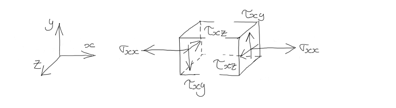

2. Derivation of the Momentum Equation¶
2.1. Newton’s Second Law - The net force equals the rate of change of momentum¶
\[\vec F = {D {\vec V M} \over D t}\]
2.2. For a system:¶
\[\vec F = {D \over D t} \int_{SYS} \vec V dM\]
2.3. For a control volume (via Reynolds Transport Theorem):¶
\[\sum \vec F_{CV} = {\partial \over \partial t} \int_{CV} \vec V \rho dV + \int_{CS} \vec V \rho \vec V \cdot \hat n dA\]
2.4. LHS 1) Body forces - weight for an element \(\delta m\):¶
\[\delta \vec F = {D \over D t} \vec V \delta m = \delta m {D \over {Dt}} \vec V = \delta m \cdot \vec a\]
\[\delta \vec F_b = \delta m \cdot \vec g = \rho \delta x \delta y \delta z \cdot \vec g\]
2.5. LHS 2) Normal force and Tangential force¶

- Subscript notation:
- 1st subscript refers to the direction of the normal vector
- 2nd subscript refers to the direction of the stress vector
- Sign convention:
- Normal Stress is positive if it’s in the same direction as the outward normal vector
- Shear Stress is positive if it’s in the same direction as the coordinate system w.r.t the outward normal vector
2.5.1. Conservation of Momemtum in x-direction:¶
\[\delta F_{sx} = \left( {\partial \sigma_{xx} \over \partial x} + {\partial \tau_{yx} \over \partial y} + {\partial \tau_{zx} \over \partial z} \right) \delta x \delta y \delta z\]
2.5.2. Conservation of Momemtum in y-direction:¶
\[\delta F_{sy} = \left( {\partial \tau_{xy} \over \partial x} + {\partial \sigma_{yy} \over \partial y} + {\partial \tau_{zy} \over \partial z} \right) \delta x \delta y \delta z\]
2.5.3. Conservation of Momemtum in z-direction:¶
\[\delta F_{sz} = \left( {\partial \tau_{xz} \over \partial x} + {\partial \tau_{yz} \over \partial y} + {\partial \sigma_{zz} \over \partial z} \right) \delta x \delta y \delta z\]
2.6. Equation of motion:¶
\[\rho g_x + {\partial \sigma_{xx} \over \partial x} + {\partial \tau_{yx} \over \partial y} + {\partial \tau_{zx} \over \partial z} = \rho \left ( {\partial u \over \partial t} + u{\partial u \over \partial x} + v {\partial u \over \partial y} + w {\partial u \over \partial z} \right )\]\[\rho g_y + {\partial \tau_{xy} \over \partial x} + {\partial \sigma_{yy} \over \partial y} + {\partial \tau_{zy} \over \partial z} = \rho \left ( {\partial v \over \partial t} + u {\partial v \over \partial x} + v {\partial v \over \partial y} + w {\partial v \over \partial z} \right )\]\[\rho g_z + {\partial \tau_{xz} \over \partial x} + {\partial \tau_{yz} \over \partial y} + {\partial \sigma_{zz} \over \partial z} = \rho \left ( {\partial w \over \partial t} + u {\partial w \over \partial x} + v {\partial w \over \partial y} + w {\partial w \over \partial z} \right )\]
2.6.1. Three equations + continuity = Four equations¶
2.6.2. Unknowns: u, v, w and nine stresses = Twelve unknowns - need more infomation¶
2.6.3. Invisid flow - no shearing stresses¶
\[\sigma_{xx} = \sigma_{yy} = \sigma_{zz} = -p\]
2.6.4. Euler’s Equation in the x-direction:¶
\[\rho g_x - {\partial p \over \partial x} = \rho \left ( {\partial u \over \partial t} + u {\partial u \over \partial x} + v {\partial u \over \partial y} + w {\partial u \over \partial z} \right )\]
2.6.5. Vector Notation:¶
\[\rho \vec g- \nabla p = \rho \left ( {\partial \over \partial t} \vec V + \vec V (\nabla \cdot \vec V) \right )\]